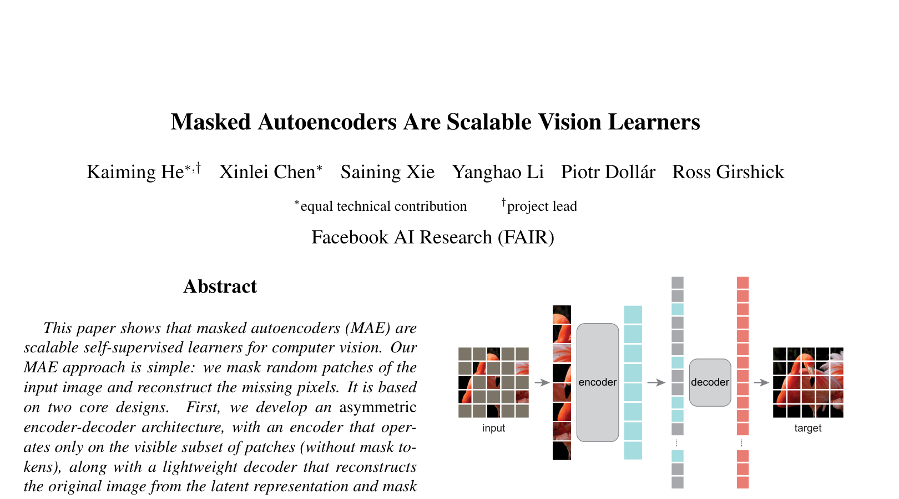
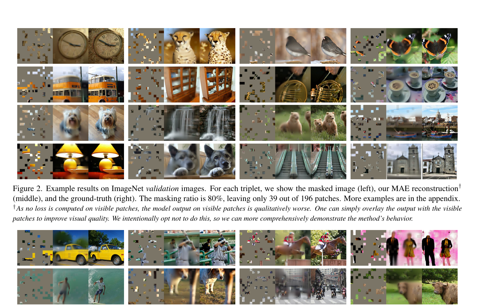
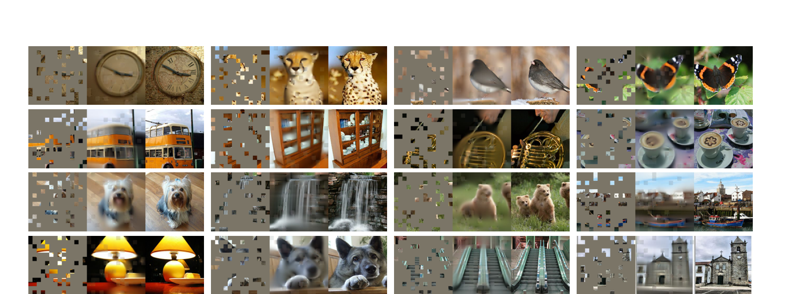
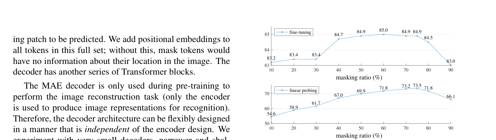

MAE¶
📄 论文链接：arXiv:2111.06377 | PDF
目录¶
核心要点¶
- MAE (Masked Autoencoder) 是 BERT 在计算机视觉领域的成功拓展：通过随机遮盖图片中大量 patch（如75%），再重构被遮盖的像素，实现自监督预训练。
- 核心创新在于非对称 encoder-decoder 架构与高掩码率：编码器仅处理可见 patch 以节省计算，解码器为轻量 Transformer 用于重构；高掩码率迫使模型学习全局语义而非局部插值。
- 仅需 ImageNet-1K 数据即可达到 SOTA：在100万张图片上自监督预训练后微调，ViT-Huge 达到当时最优精度，媲美此前需要百倍数据的有监督方法。
- 迁移学习能力极强：预训练模型在目标检测、实例分割、语义分割等下游任务上均取得优异效果，验证了自监督视觉表征的通用性。
- 写作范式值得借鉴：导言采用"提出问题-分析问题-引出方案"的结构，清晰阐述了为何 MAE 这样设计，而非简单罗列做法。
1. 背景与动机¶
1.1 与前序工作的关系¶
MAE 的定位可以放在以下脉络中理解：
- Transformer：纯注意力机制的编码器-解码器，在机器翻译上优于 RNN。
- BERT：使用 Transformer 编码器 + 完型填空（masked language model）自监督训练，将 Transformer 拓展到通用 NLP 任务，无需标注数据即可学到强大表征。
- ViT：将 Transformer 直接应用于 CV，把图片切成 16x16 的 patch 作为 token。当训练数据足够大（千万至亿级）时，精度可超越 CNN。
- MAE：相当于 BERT 的 CV 版本，基于 ViT 架构，将训练拓展到无标注数据上，通过完型填空式自监督获取图像理解能力。
虽然 MAE 不是第一个将 BERT 思想迁移到 CV 的工作（此前有 iGPT、BEiT 等），但它很可能是这一系列工作中未来影响最大的一篇，正如 BERT 极大加速了 Transformer 在 NLP 中的普及，MAE 有望使 Transformer 在 CV 中的应用更加广泛。
1.2 标题解读¶
标题为 "Masked Autoencoders Are Scalable Vision Learners"，包含两个关键信息：
- Scalable Vision Learner：可扩展的视觉学习器。它是一个 backbone 模型，不仅限于分类器。"scalable" 强调算法能随数据和算力增长而持续提升。
- Masked Autoencoder："masked" 源自 BERT 的 masked language model，即每次挖掉部分内容再去预测；"auto" 指标签和样本来自同一信号本身（x 和 y 同源），区别于一般 CV 中标签为外部文本的情况。作者特意加上 "auto" 是为了与 CV 中其他 encoder 区分开来。
这种"A is B"的标题句式（如 GPT 系列）是一种强有力的模板，将结论浓缩为一句话，且语气客观，让读者自行判断其价值。
1.3 作者信息¶
- 一作 Kaiming He（何恺明），ResNet 一作，标注为 project lead（项目发起人/管理者）。
- 其余作者均来自 Facebook AI Research (FAIR)。
- 后两位作者是物体检测领域最知名的研究者之一。
1.4 为什么 BERT 式自监督在 CV 中落后于 NLP？¶
作者在导言中提出三个核心原因：
- CNN 架构不适合 mask：此前 CV 主流是卷积神经网络，卷积窗口在滑动时无法像 Transformer 那样将 mask 作为一个特殊 token 保留并区分开来，mask 信息会在卷积过程中被模糊掉。不过随着 ViT 的出现，这个问题已不复存在。
- 信息密度不同：语言中每个词是高语义单元，去掉几个词就构成有挑战的任务；而图片像素冗余度高，简单遮住一个 patch 可通过邻居插值还原。MAE 的解决思路是遮住非常高比例的 patch（如75%），大幅降低冗余，迫使模型关注全局信息而非局部插值。
- 解码器的复杂度差异：NLP 中预测的是离散的词（高语义层次），一个全连接层即可；CV 中要还原原始像素（低层次表示），需要更复杂的解码器（类似语义分割中使用转置卷积而非简单 MLP）。
2. 方法¶

Figure 1: MAE 架构（随机遮盖 75% patches + 重建）2.1 整体架构¶

Figure 3: MAE 在 COCO 上的重建效果
Figure 2: MAE 在 ImageNet 上的重建效果
Figure 5: 不同 masking ratio 对性能的影响MAE 是一个非对称的 encoder-decoder 自编码器：
- 输入图片被切成若干 patch（如16x16）。
- 随机选取一部分 patch（如25%）作为可见 patch，其余被 mask 掉。
- 编码器（标准 ViT）仅对可见 patch 进行编码，得到 latent representation。
- 将所有 patch 的位置重新排列：可见 patch 用编码器输出的特征填充，被 mask 的 patch 用一个共享的可学习向量（mask token）填充，并加上位置编码。
- 解码器（轻量 Transformer）接收完整序列，重构所有被 mask patch 的原始像素。
- 下游使用时只需编码器，解码器丢弃。
非对称设计的关键优势：编码器只处理可见 patch（如25%），计算量大幅降低；解码器虽需看全部位置，但设计得足够轻量（计算量不到编码器的1/10）。
2.2 掩码策略¶
- 与 ViT 相同，将图片切成固定大小的 patch。
- 对 patch 进行均匀随机采样，保留少量（如25%），其余全部 mask。
- 高掩码率（75%甚至更高）是关键：若掩码太少，任务过于简单（插值即可），模型学不到有意义的表征；高掩码率创造了有挑战的非平凡任务，迫使模型学习全局语义。
2.3 编码器¶
- 完全采用标准 ViT 架构，无任何改动。
- 仅对可见 patch 执行操作：线性投影 + 位置编码 → 送入 Transformer blocks。
- 被 mask 的 patch 不进入编码器，从而节省计算和内存。
2.4 解码器¶
- 另一个 Transformer，但规模远小于编码器（宽度和深度均可更小）。
- 输入包括两部分：
- 可见 patch 的 latent representation（来自编码器输出）。
- 被 mask patch 的 mask token（共享可学习向量）+ 位置编码。
- 解码器仅在预训练阶段使用，下游任务只需编码器。
- 最后一层为线性层，将每个 token 映射到 patch 大小（如16x16=256维），reshape 后即得重构像素。
2.5 损失函数与归一化¶
- 使用 MSE（均方误差）作为损失函数。
- 仅对被 mask 的 patch 计算损失（与 BERT 只在 mask 位置计算 loss 一致）。
- 可选地对每个 patch 内的像素做 normalization（均值0、方差1），使数值更稳定，实验显示有提升效果。
2.6 简单高效的实现¶
- 生成所有 patch 的 token 序列（线性投影 + 位置编码）。
- 随机 shuffle 整个序列，取前 N%（如25%）作为可见 token，等价于均匀随机采样。
- 可见 token 送入编码器。
- 解码时，将编码器输出与 mask tokens 拼接，再 unshuffle 恢复原始顺序，以便与原始 patch 一一对应计算损失。
- 全程无需稀疏操作，实现简洁高效，不影响标准 ViT 的任何操作。
3. 实验¶
3.1 ImageNet-1K 上的自监督预训练 + 微调¶
实验设置：先在 ImageNet-1K（100万张图）上做自监督预训练（不使用标签），再在同一数据集上做有监督微调或 linear probing，报告验证集 top-1 精度。
基线对比（ViT-Large/16）： - ViT 原始设置在 ImageNet-1K 上训练（不稳定）。 - 加入强正则化后显著提升。 - MAE 预训练 + 微调（仅50 epochs）：进一步超越。
这表明 MAE 能纯粹从图像自身学到有效信息，即使数据集不变也有显著提升。
3.2 消融实验（Table 1）¶
- 解码器深度：8层 Transformer block 效果较好；full fine-tuning 对深度不太敏感，linear probing 则受益于更深解码器。
- 解码器宽度：512维较优。
- 是否在编码器中加入 mask patch：不加入反而精度更高，且计算量减少3.3倍。验证了非对称架构的双重优势。
- 重构目标：MSE + per-patch normalization 效果最好；PCA 降维和 BEiT 式的离散 token 预测在 fine-tuning 下与 MSE 持平，但 MSE 更简单。
- 数据增强：MAE 对数据增强不敏感，简单的随机裁剪即可获得不错效果。
- 掩码采样策略：随机采样效果最好且最简单；块采样和格点采样均不如随机采样。
3.3 掩码率的影响¶
- 掩码率过低时精度较差。
- 超过40%后出现显著跳跃，最佳区间在60%-80%左右。
- Linear probing 对掩码率更敏感。
3.4 训练效率¶
- ViT-Large + 1层解码器：精度不错且训练时间最短。
- 相比将所有 mask patch 送入编码器 + 大解码器的方案，加速达3.7倍。
- ViT-Huge 加速更为显著。
- 硬件配置：128个 TPUv3 core，TensorFlow 实现，训练约10小时（约一天多），门槛相对可控。
- 未公布代码可能与 TensorFlow + TPU 的技术栈有关。
3.5 预训练轮数的影响¶
- 在 ImageNet-1K 上训练至1000 epochs 仍能看到精度持续提升，过拟合不严重。
- 一般 ImageNet 训练200 epochs 即止，MAE 展示了自监督预训练的良好可扩展性。
3.6 与先前工作的对比（Table 3 & Figure 8）¶
- MAE 在同等条件下效果最优。
- 与 ViT 在 JFT-300M（3亿标注图片）上的效果相比，MAE 仅用 ImageNet-1K（1/300数据量）即达到非常接近的水平。
- JFT 类别远多于 ImageNet 且包含更多 Google 关注的目标，两者不完全可比，但足以说明 MAE 的数据效率极高。
3.7 微调层数的影响（Figure 9）¶
- 从仅调最后一层开始，逐步增加可调层数。
- 调整约4-5层后精度基本恢复到 full fine-tuning 水平，之后趋于平稳。
- 底层学到的特征较为通用，高层与具体任务更相关，微调时优先调整上层即可。
3.8 可视化结果¶
- Figure 2 & 3：在 ImageNet 和 COCO 验证集上，即使遮住80%的 patch，MAE 仍能高质量重构出时钟指针、车辆轮廓、狗的形状等，展示了强大的全局理解和生成能力。
- Figure 4：即使遮住95%的区域，仍能大致还原蘑菇、西红柿、汽车等内容，堪称"炼金术"级别的重构。
- 注：展示的可能是精选样例，对所有图片都完美还原仍需后续工作改进。
4. 迁移学习¶
4.1 COCO 目标检测与实例分割¶
- 使用 MAE 作为 backbone 后，在 COCO 检测和分割任务上效果均为最优，超越 ViT 和 BEiT。
4.2 语义分割¶
- 同样取得最佳效果。
4.3 像素重构 vs. 离散 token 重构¶
- 重构原始像素与 BEiT 式 dVAE 离散 token 重构的效果差距极小。
- 鉴于像素重构实现更简单，简单方法更优。
5. 讨论与总结¶
5.1 核心贡献回顾¶
- 高掩码率：遮住大量 patch，降低冗余，创造有挑战的自监督任务。
- Transformer 解码器直接重构像素：流程简单，避免引入额外的离散化步骤。
- 结合 ViT 之后的各项技术改进：使训练更鲁棒。
三者结合使得在 ImageNet-1K 上自监督训练的效果超越此前所有工作。
5.2 图片与语言的本质区别¶
- 语言中词是高语义单元；图片中 patch 并非语义 segment，可能包含多个物体的碎片或重叠区域。
- 即便如此，MAE 仍能完成复杂任务，说明 Transformer 确实能学到隐含的良好语义表达。
5.3 Broader Impacts¶
- 若训练数据存在 bias，模型可能产生负面社会影响。
- 作为生成模型，MAE 可生成不存在的内容，与 GAN 类似存在误导风险。
- 作者呼吁在更广泛应用时需考虑这些潜在影响。
5.4 写作启示¶
- 导言采用问答式结构：先回到本质问题（为什么 BERT 式方法在 CV 中效果不佳），逐一分析后再引出 MAE，讲清了"为什么这么做"而非仅仅"做了什么"。这是强烈推荐的高水平论文写法。
- 相关工作写作建议：对于特别相关的工作（如 iGPT、BEiT），应明确写出与本文的区别，不要让读者自行猜测。
- 实验详尽：所有可调超参数均有对应消融实验和分析，增强了工作的可信度和参考价值。
- 简单想法 + 优秀结果 + 详细实验 = 高质量工作。
5.5 关于"简单"与"可扩展"的辩证看待¶
作者称 MAE "simple and scalable"，但需注意： - "简单"是相对于 ViT 基础而言，整个 Transformer 架构本身并不简单。 - "可扩展"建立在拥有充足算力和无标注数据的前提下。 - 这两个词更多是针对资源充裕的研究团队而言，普通研究者不必过度代入。